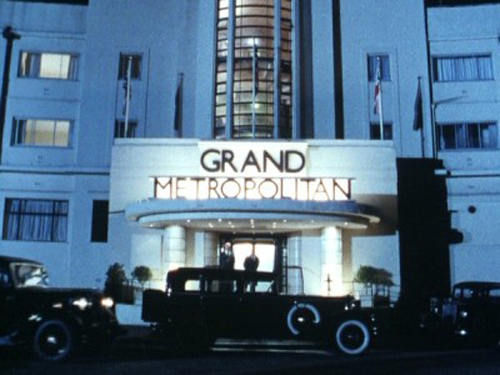
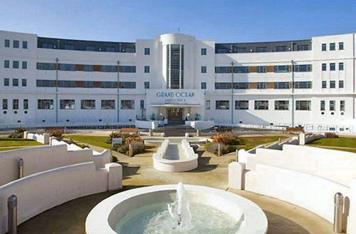

Eastbourne seafront and Pier - where Poirot and Hastings take their holiday.

The Ocean Hotel was used as 'The Grand Metropolitan'.

It was designed by the architect Richard Jones who also designed the nearby Saltdean Lido. Now restored and turned into apartments.

Opened in 1938, the Ocean Hotel had 344 bedrooms and a dining hall that could seat 300 people. It consisted of a crescent-shaped main building which contained the public rooms and 130 bedrooms. Six other buildings contained bedrooms and bathrooms only. The hotel was arranged so, during the winter season, the six detached blocks could be closed down and the main building run as a separate hotel.

During the war the hotel was taken over by the Auxiliary Fire Service and later became a fire service college which was officially opened by the then Home Secretary Herbert Morrision.

It was used throughout the war and not handed back until 1952 when the lease was acquired by Billy Butlin for £250,000. Its doors were opened as a holiday centre again on 2 May 1953, after an army of workmen had spent the previous six months restoring the near-derelict building. It soon became popular with honeymooners and Billy Butlin later said the hotel was one of the best investments he had ever made.

The Devonshire Park Theatre, Eastbourne is used as itself.